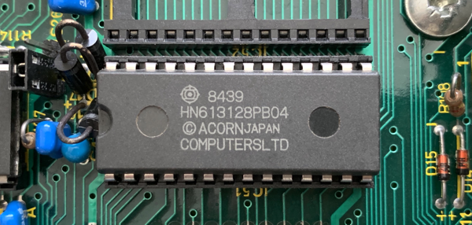
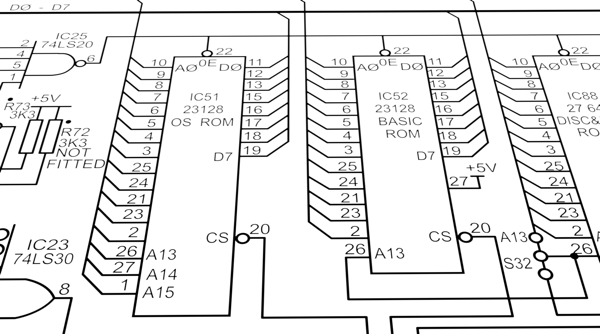

About the BBC Microcomputer, its memory map, and the scope of its operating system
- §1. About this document
- §2. Building with the ACME Assembler
- §3. The Machine Operating System (MOS)
- §4. Memory Mapped IO ($FC00-$FEFF)
- §5. The Internal Hardware We Talk Directly To (via SHEILA)
- §6. Power On / Reset
- §7. Interrupts
- §8. BRK instruction
- §9. Paged ROMs (aka "Sideways" ROMs)
- §10. Calling the Operating System
- §11. OSWRCH (For displaying text and graphics) ($FFEE)
- §12. OSRDCH ($FFE0)
- §13. OSBYTE ($FFF4) (aka *FX)
- §14. OSWORD ($FFF1)
- §15. Filing System ($FFCE - $FFDD)
- §16. OSCLI (aka 'star commands') ($FFF7)
- §17. Others
- §18. Extended vectors
- §19. Memory Map for RAM

This is a fully annotated reassembly of the operating system of the BBC Micro, v1.20. It attempts to explain every corner of the 16K ROM in some detail, hopefully throwing light onto often poorly understood sections, and in general to admire its vision, scope, ingenuity and succinctness. It also documents some of its few quirks / bugs. By creating this document I understand it a lot better now, and I hope that readers will gain some insight too. In the comments I often refer to 'NAUG' the 'New Advanced User Guide' see https://stardot.org.uk/forums/viewtopic.php?f=42&t=17243. This document was originally based on the annotated disassembly by Geoff Cox (Micronet, 1991) for which I am indebted. It has evolved considerably since it started development in late 2019, and development has continued well into 2020. Just as the BBC Micro hardware contained both innovation and also points of similarity with Acorn's System 2 to 5 and Atom microcomputers, so too the MOS operating system design shows clear signs of having evolved from their "monitors". As noted above, the Atom monitor occupied just 4K, and the System 2 was even smaller, at 2K: nevertheless they contributed design ideas to the MOS, and occasional "Historical Notes" below give details. The tiny System 1, a control keypad now best known for having appeared in an episode of "Blake's 7", had only 512 bytes of ROM and is not really in the same family. Thanks to Graham Nelson whose Inweb software is used to format/layout the HTML version of this document, and for his helpful comments, corrections and suggestions and to Adrian Nelson for more corrections and suggestions. tobymnelson@gmail.com
§2. Building with the ACME Assembler.
This document is downloadable ('os120_acme.a') in the syntax for the ACME assembler (as well as being browsable in HTML format). To assemble, producing os120.bin as a binary, and a report file os120_report.txt: acme -r os120_report.txt -o os120.bin os120_acme.a When assembled it should produce a binary file that is byte for byte identical to the original OS1.20 ROM image. Its MD5 checksum is 0a59a5ba15fe8557b5f7fee32bbd393a To explain some perhaps non-obvious points of the ACME assembler syntax: * When a branch uses the '+' symbol, the destination is the next '+' label. * When a branch uses the '-' symbol, the destination is the previous '-' label. * Symbols '++' and '--' work similarly. * !word outputs a 16 bit value as two bytes in little endian order * !be16 outputs a 16 bit value as two bytes in big endian order * ">.address" means the high byte of .address * "<.address" means the low byte of .address To download the ACME assembler, see https://github.com/meonwax/acme To download this document as assembly language source, see:
§3. The Machine Operating System (MOS).
An operating system initialises and keeps a computer running properly. This includes servicing requests from hardware in a timely manner. An OS also provides a standardised set of useful functionality available to user programs. The 6502 can directly address up to 64k of memory which is broadly assigned as follows: $0000-$7FFF (32k) = RAM (or $0000-$3FFF (16k) = RAM for Model A computer) $8000-$BFFF (16k) = BASIC or other Paged ROM (aka "Sideways ROM") $C000-$FFFF (16k) = Operating System ROM Each 256 bytes of memory is called a 'page', so addresses $0000 to $00FF is called 'page zero', $0100-$01FF is 'page one', etc. Page zero is also known as 'zero page'.

§4. Memory Mapped IO ($FC00-$FEFF).
Addresses in the range $FC00-$FEFF are not mapped to the OS ROM as might be expected, but are connected to hardware devices. Consequently the CPU can communicate with hardware devices by reading and writing to specific addresses in this range. See Chapter 3: Memory Mapped IO.
§5. The Internal Hardware We Talk Directly To (via SHEILA).
We use an area of memory mapped I/O called SHEILA ($FE00-$FEFF) to talk to hardware devices inside the computer: Chip What it does --------------------------------------------------------------------------------------- CRTC 6845 Cathode Ray Tube Controller. Handles the video screen format and the cursor height. ACIA 6850 } The ACIA and Serial ULA together control the RS-423 and cassette, Serial ULA } including serial printers connected to the RS-423 port. Video ULA Controls video output: timing, logical and physical colours, cursor width. System VIA 6522 Controls Sound, Speech, Keyboard, and selects one of four screen hardware addresses for scrolling purposes User VIA 6522 Parallel Printer (Port A) and User Port (Port B). ADC 7002 Analogue to Digital Convertor. Analogue input, often for Joysticks.
When powered on or reset (via the BREAK key) the 6502 executes code at the address retrieved from $FFFC/D (See .resetEntryPoint). The 'BREAK' key causes a soft reset. 'CTRL BREAK' causes a hard reset. A hard reset clears RAM and resets more of the OS variables.
The BBC Micro is a single processor with no threads or job queues. It uses interrupts to run code concurrently with regular code. Interrupt code must finish executing in a short amount of time to allow the system to continue updating effectively. Acorn recommends it should last less than 2ms (4000 clock cycles). The CPU receives interrupts generated by hardware devices when they need attention. There are three interrupt types (NMI; IRQ1; IRQ2) NMI = non-maskable interrupts These are the highest priority of interrupt. They cannot be disabled. They are only produced by certain additional hardware (hard disk controllers and Econet). When an NMI is generated the 6502 interrupts its normal operation and executes from the location given in the OS at $FFFA-B (i.e. $0D00 = .nmiEntryPoint). This is the NMI handling code. By default this just returns immediately by executing an RTI instruction. IRQ1 = interrupt request 1 This occurs when hardware generates an IRQ, or a BRK instruction occurs. The OS uses this IRQ extensively. If a BRK instruction was the cause then the BRKV vector is used to handle it (the OS uses this to output error messages). Otherwise the operating system checks each hardware in turn to see what needs attention. The OS services the RS-423, cassette, vertical sync, 100Hz timer, interval timer, ADC conversion (e.g. used for analogue joysticks), keyboard, speech (if speech hardware is present), and printer as needed. Based on the 100Hz timers, it also updates sounds and updates the flashing colours. Finally any unhandled interrupt gets passed on to IRQ2. IRQ2 = interrupt request 2 This is available for user code to intercept unhandled interrupts. It is the lowest priority of interrupt. Calls to IRQ1 and IRQ2 handlers are indirected through 'vectors' (2 byte addresses stored in RAM at $0200 upwards), meaning the user can intercept them and do their own processing (often then passing through any unwanted interrupts back into the original default interrupt routine). NMIs cannot be redirected.
The BRK instruction is used for error handling. It pushes the program counter and flags onto the stack (including a set bit for the BRK flag) and starts executing from the address stored at $FFFE/F (which is set to .irqEntryPoint). The OS uses BRK to display error messages (as does the BASIC ROM). The BRK instruction is followed by an error number then the error string to display. The .brkHandler code displays the error message then enters the current language. Typically though, as soon as the machine has started up it will be running a language such as BASIC. BASIC installs its own BRK handler, at which point the OS BRK handler is no longer used. Note that the BRK instruction is unrelated to the BREAK key. Pressing BREAK causes the 6502 to RESET.
§9. Paged ROMs (aka "Sideways" ROMs).
Functionality of the BBC Micro can be extended via the use of Paged ROMs. These ROMs can be quickly switched ('paged in') into the memory map as needed at address range $8000-$BFFF. Once the ROM code has finished executing the ROM is 'paged out' and the previous ROM reinstated into the memory map (which is normally the current language, often BASIC). Paged ROMs can implement programming languages, provide more commands (star commands) to the user, or even act as a Read Only filing system (using ROMFS). An optional speech ROM is also supported, which generates speech from text. It is used alongside a Phrase ROM or 'PHROM' that provides the word and phoneme data for generating speech. The BBC Micro has 5 ROM sockets available for Paged ROMs (and the MOS supports up to 16 with some additional hardware). In a default configuration (as shipped) the first two ROM sockets hold the OS and BASIC. 'Sideways RAM' Later in the BBC Micro's life it was discovered that you could add 'Sideways RAM' instead of a ROM. This requires a write signal as the BBC Micro is hard-wired to prevent writing to the Sideways area. A common 'Sideways RAM' implementation consists of an expansion board (aka 'daughter board') that plugs into a ROM socket with a flying lead connected to the motherboard. This can then be used as either additional program RAM or (perhaps more often) to hold a ROM image.
§10. Calling the Operating System.
There is a standard set of specific addresses (high in memory, between $FFB9 and $FFF7) that the user calls to access OS routines. These are detailed below. The following entry points are the API for user programs, or other ROMs, which want to access MOS facilities. Note that they occur at addresses which are guaranteed not to change: for example, in all versions of the MOS, OSBYTE is at $FFF4. It is therefore safe for a user program to 'JSR .OSBYTE' without knowing which MOS version is present. No other addresses in the ROM are safe to jump to from outside the ROM. Many of these calls are then indirected through a set of 'standard vectors' located in RAM at $0200-$0235. A vector is a two byte address. By default each vector contains the address within the OS ROM of the relevant routine. Advanced users can change a vector to point to their own routine in RAM to handle the call. This allows the user to extend or replace the existing functionality provided by the OS. If a Paged ROM wishes to change the vectors (for example a filing system ROM would want to redirect filing system calls to its own routines within its ROM) then a different system of overriding these vectors is used. See the 'Extended Vectors' section below. Incidentally the 6502 based Commodore computers from the Commodore PET, the VIC 20 through to the Commodore 64 have a similar arrangement of vectors, with its KERNAL functions. See https://www.pagetable.com/?p=926 .
§11. OSWRCH (For displaying text and graphics) ($FFEE).
OSWRCH is generally used to output text or graphics. Output is usually sent to the screen, but it can be redirected to other output devices, such as a printer or a file. OSWRCH is the equivalent of the 'VDU' command from BASIC, which we use here for brevity. VDU 32-126 shows ASCII text characters on screen. VDU 127 is delete, which removes the previous character. VDU 128-255 displays custom characters on screen (or Teletext codes in MODE 7). VDU 0-31 have individual special meanings, and often require more VDU calls that act as parameters. For example VDU 22 is the code to change display MODE. Calling this does nothing on it's own, as it's waiting for the next VDU call (e.g. VDU 2) specifying the MODE number to change to. Complex code is found within VDU 25 (the equivalent of BASIC's PLOT command) and is used to plot points, lines, dotted lines, filled triangles, and perform horizontal line fills. See Chapter 8: PLOT. Because OSWRCH does so much, a large chuck (37%) of the operating system is devoted to it. See .oswrchEntryPoint. The BBC Micro defines eight screen MODEs (0-7) each with different combinations of pixel resolutions, colours, text vs graphics capability, and therefore memory usage.
Reads a character from the keyboard (or other input source such as RS-423 or file). See .osrdchEntryPoint.
§13. OSBYTE ($FFF4) (aka *FX).
OSBYTE provides a wide range of miscellaneous functionality. This can be accessed from BASIC as a '*FX' command. For example: *FX 12,2 sets the keyboard auto-repeat rate to a faster value than the default. This is equivalent to the assembler version: LDA #12 LDX #2 JSR .OSBYTE The A,X,Y registers are the parameters to this call to the OS. Register 'A' determines the type of the call, and X and Y are the parameters for that type. See .osbyteEntryPoint.
Some calls to the OS needs more parameters than an OSBYTE can provide. In this case OSWORD is used. Registers X and Y together form an address that holds a parameter block of data specific to the type of OSWORD given by register 'A'. OSWORD calls are available to machine code programs but there is no equivalent star command like *FX. See .oswordEntryPoint. See .osbyteAndOSWORDRoutineTable (end of table for OSWORD entry points)
§15. Filing System ($FFCE - $FFDD).
A filing system is selected via a star command. The OS ships with support for tape (*TAPE) and ROM filing systems (*ROM). Support for other filing systems (e.g. *ADFS, the Advanced Disk Filing System) can be added using Paged ROMs. There is a range of OS calls designed to perform operations on the current filing system: OSFIND ($FFCE) - Open or close a file (See .osfindEntryPoint) OSGBPB ($FFD1) - Read / write multiple bytes to an open file. This is not implemented in this OS for the TAPE/ROM filing systems. Filing System Paged ROMs implement this. OSBPUT ($FFD4) - Write a single byte to an open file (See .osbputEntryPoint) OSBGET ($FFD7) - Read a single byte to an open file (See .osbgetEntryPoint) OSARGS ($FFDA) - Read / write a file's attributes (See .osargsEntryPoint) OSFILE ($FFDD) - Load / Save an entire file (See .osfileEntryPoint)
§16. OSCLI (aka 'star commands') ($FFF7).
The OS is shipped with a Command Line Interpreter (CLI). This is a primitive form of shell. Commands can be accessed from BASIC or via the OSCLI routine. BASIC prefixes these with an asterisk, e.g. '*FX' etc. Hence these commands are known as 'star commands'. OSCLI executes a command supplied as a string. The OS provides a standard set, and Paged ROMs can add more. See .oscliEntryPoint. See .starCommandTable.
OSRDRM ($FFB9) - Read byte from Paged ROM (new in MOS 1.20) (See .osrdrmEntryPoint) VDUCHR ($FFBC) - A cut down form of OSWRCH just for writing to the screen (See .vduChrEntryPoint) OSEVEN ($FFBF) - Generates an EVENT, a kind of managed interrupt (See .eventEntryPoint) GSINIT ($FFC2) / GSREAD ($FFC5) - Parse a string in memory (e.g. from an OSCLI command) (See .gsinitEntryPoint) NVRDCH ($FFC8) / NVWRCH ($FFCB) - Non vectored versions of OSRDCH / OSWRCH OSASCI ($FFE3) - Write character using OSWRCH, or write CR/LF if CR found (See .OSASCI) OSNEWL ($FFE7) - Write CR/LF (See .OSNEWL)
Extended vectors allow Paged ROMs to intercept the standard vectors at $0200 upwards, effectively getting them to point to an address *within a specified Paged ROM*. A table containing 27 entries is stored at $0D9F (.extendedVectorSpace) with 3 bytes per entry: the two byte address a single byte holding the ROM number To use an extended vector write appropriate values into these locations, then store the address '$FF00+3*N' in OS vector at '$0200+2*N' (remembering the old address at $0200+2*N if required). See Chapter 23: Extended vectors.
$0000-$008F Current language workspace $0090-$009F Econet workspace $00A0-$00A7 NMI workspace [unused by the OS, can be used by Paged ROMs] $00A8-$00AF "OS temp workspace" [unused by the OS, can be used by Paged ROMs] $00B0-$00CF Filing System workspace $00D0-$00FF VDU/OS workspace $0100-$01FF 6502 stack (the stack works downwards from $01FF) $0200-$0235 OS vectors $0236-$02FF OS variables $0300-$037F VDU variables $0380-$03DF Cassette Filing System workspace $03E0-$03FF Keyboard input buffer $0400-$07FF Workspace for the currently active language (e.g. BASIC) $0800-$08FF Sound workspace; Sound buffers; Printer buffer; Envelope storage $0900-$09FF Envelope/Speech/Cassette buffers $0A00-$0AFF Cassette/RS-423 input buffer $0B00-$0BFF Soft key buffer $0C00-$0CFF Soft character ('font') definitions $0D00-$0D9E NMI routine (used by Disc Controllers and Econet) $0D9F-$0DEF Expanded vector set $0DF0-$0DFF Paged ROM workspace storage locations $0E00-$7FFF Available user memory Available user memory starts at $0E00 for a standard TAPE based machine. At reset time, Paged ROMs such as disc controllers can request more RAM pages from $0E00 upwards. This will commonly raise the start of user memory to $1900. Soft character definitions (aka 'font explosions') also raise the start of available memory. See .osbyte20EntryPoint OSBYTE 131 reads the current OSHWM (OS High Water Mark), the true address of the start of user memory after ROMs and font explosions have claimed memory. This often has the same value as the PAGE variable in BASIC (unless PAGE is manually changed), which is where BASIC programs are located. See .osbyte131EntryPoint See .currentOSHWM